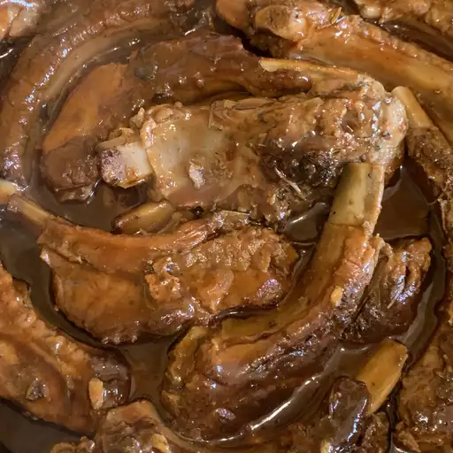

Description
This BBQ ribs recipe may be different than others you've tried, but for super tender ribs, give it a try! Lean, country-style pork ribs are boiled in seasoned water until tender, then finished up in the oven under a blanket of your favorite barbecue sauce as they bake to perfection. That's it! Back to simplicity, back to country life.
Ingredients
2 1/2 pounds country-style pork ribs
2 tablespoons kosher salt
1 tablespoon garlic powder
1 teaspoon ground black pepper
1 cup barbecue sauce
Steps
Place ribs in a large pot and cover with water. Stir in kosher salt, garlic powder, and pepper, and bring water to a boil over medium heat. Continue to boil until ribs are tender, 40 to 45 minutes.
While the ribs are boiling, preheat the oven to 325 degrees F (165 degrees C).
Remove ribs from the pot, and place them in a 9x13-inch baking dish. Pour barbecue sauce over ribs. Cover the baking dish with aluminum foil.
Bake in the preheated oven until the internal temperature of the pork has reached 160 degrees F (70 degrees C), 1 to 1 1/2 hours.